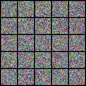
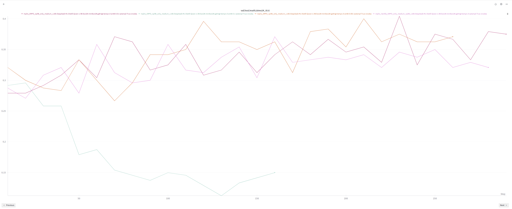
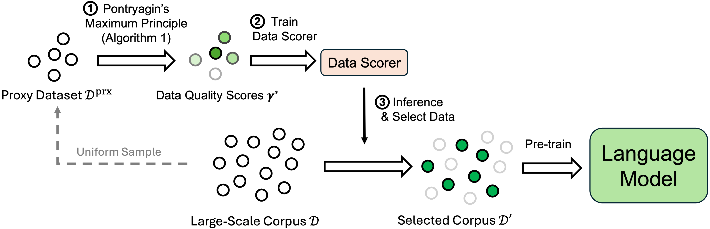

Apr 2026 — present
Research intern · Max Planck Institute for Intelligent Systems
Tübingen, Germany
Investigating Flow Maps — a continuous generative framework — as a route to few-step generation (more details to come...)

Research intern at the Max Planck Institute for Intelligent Systems, Tübingen.
M.Sc. student in the MVA program at ENS Paris-Saclay
and engineering student at École des Ponts.
I am interested in continuous generative models and reasoning in language models, and in the surprising amount of common ground between them. Most of my recent work sits at one of two ends: the geometry of diffusion and flow-based samplers (score matching, Schrödinger bridges, flow maps), and the design of reinforcement-learning objectives that shape how language models reason — not just whether they get the answer right.
Tübingen, Germany
Investigating Flow Maps — a continuous generative framework — as a route to few-step generation (more details to come...)
Abu Dhabi, UAE
Built RL training pipelines for LLM reasoning that fed directly into the training stack of the upcoming Falcon Reasoning Model, and authored two drafts on entropy-rewarded policy optimization (SERPO) and adaptive SFT/RL switching (SASR).
Bordeaux, France
Optimised Retrieval-Augmented Generation pipelines across 50+ CRM systems by fine-tuning domain-specific rerankers, and designed lightweight NLP architectures for automatic ticket categorisation.
Coursework includes Probabilistic Models, Optimal Transport for ML, Reinforcement Learning, Statistical Learning, Deep Learning, Stochastic Calculus in ML, and Optimisation. Of the courses graded so far, I rank among the top of the cohort in Optimal Transport for ML.
Department of Mathematics & Computer Science
Consistently ranked among the top of the cohort in the theoretical core of the curriculum — Stochastic Processes, Optimal Control, Partial Differential Equations, and Probability — as well as in the statistics courses (Statistics & Data Analysis, High-Dimensional Statistics). Additional coursework in Deep Learning, Machine Learning (PyTorch / JAX), and Advanced Algorithms (C++/Python).
Two-year intensive program in Mathematics, Physics and Computer Science preparing for the French grandes écoles entrance exams.
Score-based diffusion, flow matching, and flow maps. I am especially curious about what limits these samplers in practice — discretization bias, mode collapse at high noise, and the gap between the continuous-time theory and the finite-step algorithms we actually run.
Schrödinger bridges and stochastic optimal transport, and how the same objects keep reappearing inside modern diffusion models. Unpaired translation is the cleanest setting I have found to develop intuition for both.
Reinforcement-learning objectives that act at the right granularity — token, sentence, or group — and test-time procedures (verification, self-consistency) that turn extra compute into better answers without retraining.
A curated subset of recent work — from the MVA Master, research internships, and École des Ponts. Roughly ordered by how much I think they reflect the kind of questions I want to keep working on. Code and writeups linked where they exist.

MVA · Probabilistic Graphical Models project, ENS Paris-Saclay.
Annealed Langevin Dynamics is a clean idea that becomes biased the moment we discretise it, and the bias grows with the noise level. Starting from Hyvärinen's half-denoising observation, we add a small correction to the score step inside an NCSN sampler and study what it buys us empirically on MNIST, CIFAR-10, and CelebA: cleaner modes at high noise, without giving up the mode coverage that motivated annealed sampling in the first place.
MVA · Deep Learning project, ENS Paris-Saclay.
A from-scratch re-implementation and study of De Bortoli's Schrödinger Bridge Flow for unpaired data translation. The goal was less to chase a benchmark than to develop intuition for how diffusion-based optimal transport actually behaves on small image-to-image tasks — in particular, how the iterative refinement of the bridge trades off transport cost against sample fidelity.

Research internship · Falcon Reasoning team, Technology Innovation Institute (Abu Dhabi).
GRPO assigns the same scalar advantage to every token of a chain-of-thought, regardless of
whether the token is a load-bearing reasoning step or filler. SERPO adds a
small sentence-level bonus, derived from the step-wise entropy of the policy, that rewards
informative reasoning steps and damps down empty ones. The change is light enough to leave
the GRPO update dynamics essentially intact, and the sentence is a natural unit for
distilled reasoners such as DeepSeek-R1-Distill-Qwen, whose chains already
decompose along double-newlines.
Research internship · Falcon Reasoning team, Technology Innovation Institute (Abu Dhabi).
Pure RL fine-tuning on reasoning data tends to be unstable; pure SFT plateaus.
SASR threads between them. A short warmup phase of pure SFT establishes a
reference gradient norm, after which every training step is, with some probability, either
an SFT update or a GRPO update. Two switching rules are studied: an adaptive rule that
compares the current SFT gradient norm with the warmup baseline, and a simpler cosine
schedule that smoothly tilts the mixture toward RL as training progresses. Built on top of
Skywork-OR1 / verl, on the same training stack as SERPO.
Built on top of Multi-Agent Verification (Lifshitz et al., arXiv:2502.20379).
Multi-Agent Verification (MAV) scales test-time compute by spinning up many specialised aspect verifiers. The question I wanted to answer is how much of that gain we actually need the multiplicity for. Direct Verification tests two minimal alternatives in which a single model verifies its own outputs — either by continuing the same chat ("now let me check this…") or by re-querying with a dedicated verification prompt. The pipeline runs entirely on local GPUs through vLLM and is benchmarked on MATH, GPQA, MMLU-Pro, and HumanEval against MAV's multi-verifier baseline.
Independent exploration · forked from the official PD-LMC code (Chamon et al., NeurIPS 2024).
Primal-Dual LMC enforces statistical-moment constraints on the sampled distribution by carrying dual variables alongside the Langevin update. Starting from the official implementation, I ran a small experiment on MNIST to pursue a question that struck me as natural: can the primal-dual term act as plug-in guidance for a frozen, pre-trained diffusion model? The picture I came away with is that the dual update behaves a lot like classifier guidance, only for arbitrary moment constraints rather than a class label — an exploratory note rather than a finished result, but the analogy is suggestive.

Self-study · re-implementation of arXiv:2506.21545.
A re-implementation of the proxy-model + Pontryagin Maximum Principle pipeline that scores pre-training tokens, then distils those scores into a small annotator network that can label the full corpus cheaply. Built on top of fairseq with a 160M proxy LM and multi-GPU DeepSpeed training. I worked through it mostly to understand the optimal-control formulation, which I find an unusually clean lens on what "good" data even means.
Personal study series.
From-scratch implementations of RNN / LSTM / GRU, the original Transformer, GPT-2, ViT,
the Differential Transformer, and Mamba (S6), each paired with the paper. The point was
never to ship a library — it was to make sure that every modern architecture I rely
on, I have re-derived once with a pencil before trusting nn.MultiheadAttention.
École des Ponts · with Renault (vehicle sequencing) and RTE (offshore wind grid).
Two industrial optimisation challenges tackled with simulated annealing: ordering vehicles between paint and assembly workshops at Renault to minimise setup cost, and laying out offshore wind-farm cabling for RTE. A reminder that a well-tuned classical heuristic still beats most of what one would reach for first — and a useful baseline I keep returning to.
École des Ponts · Discrete probability, algorithms and statistical physics.
A short report on MCMC convergence for sampling fermion occupation numbers, with a focus on the diagnostics that distinguish slow mixing from insufficient burn-in on small lattices. My first contact with the question that has quietly run through everything since: when do we actually trust a sampler?
A U-Net (with and without attention) trained under the Flow Matching objective for face generation. A small exercise built alongside the MIT Flow and Diffusion Models course — mostly an excuse to feel out the conditional flow construction by hand. · Code
Decision trees, SVMs, k-NN, and metric learning written from scratch in JAX for the MVA practical sessions. Modest in scope, but the kind of thing I want anyone reading this site to know I have actually sat down and done. · Code
Python · C++ · Julia · R · SQL · LaTeX
PyTorch · JAX · DeepSpeed · vLLM · Ray · HuggingFace · Megatron-style parallelism
French (native) · English (fluent, TOEIC 795) · German (beginner)
The fastest way to reach me is by email — faissalizermine3@gmail.com. I am always happy to talk about diffusion / flow models, optimal transport, or reasoning in LLMs, whether or not there is a concrete role attached.